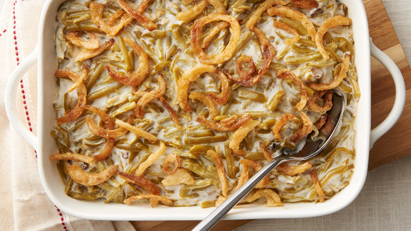

Green Bean Casserole

Green bean casserole is an American dish that is popular for Thanksgiving and other big gatherings.
It features green beans, french onions, and and cream of celery or cream of mushroom soup.
It is a great complementary dish to any meal and is loved in countless American households.
Ingredients
- 2 cans of French style green beans
- 1 can of cream of mushroom/cream of celery soup
- 1/4 cup of milk
- 1 container of fried onions
Steps
- Heat oven to 350degF. Mix green beans, soup, and milk in 1 1/2 quart baking dish.
- Bake for 20-25 minutes, add onions on top i3n the last 5 minutes or until the dish gets bubbly.